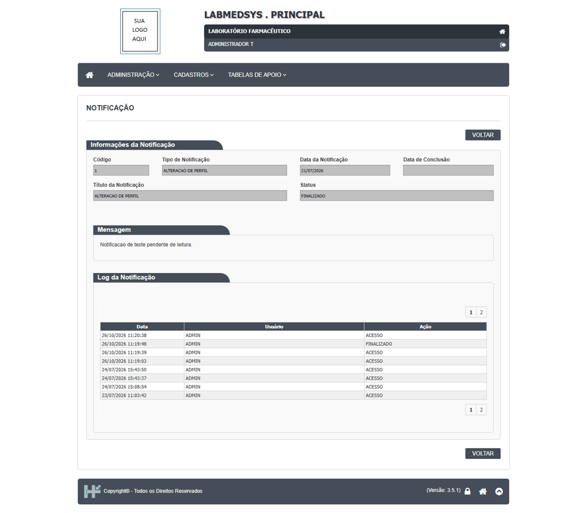

DV-PRI-038 · Cadastrar um profissional não gerou a notificação "NOVO PROFISSIONAL" para o destinatário configurado
O tipo de notificação "NOVO PROFISSIONAL" tem como destinatário o `ADMINISTRADOR T` e a notificação padrão 1 diz "Novo profissional foi cadastrado. Providenciar criação de login e configuração de perfil". Depois de cadastrar o profissional `TESTE ADM` (ID 55), **nenhuma notificação nova** apareceu em Administração › Notificações do sistema (a lista continuou só com a notificação 1, de 21/07/2026). A tela inicial também não tem aviso nem contador. **A confirmar:** se o evento depende de outra condição (por exemplo, e-mail ou outro usuário), o teste não a enxergou.
Como reproduzir o erro, passo a passo
- Em Configurar notificação, conferir que o tipo NOVO PROFISSIONAL tem o destinatário ADMINISTRADOR T.
- Em Profissional, incluir um profissional TESTE.
- Abrir Administração › Notificações do sistema, escolher Pendente leitura = TODOS e Pesquisar.
Esperado
Uma notificação nova "NOVO PROFISSIONAL" pendente para o destinatário, visível na lista e com contador na tela inicial.
Obtido
Nenhuma notificação nova.
Evidência (captura da tela)


DV-PRI-039 · Ao finalizar uma notificação, a "Data de Conclusão" continua em branco
Finalizei a notificação 1 (que já estava respondida): o status passou a FINALIZADO e o log ganhou a linha "FINALIZADO" com usuário, data e hora, mas o campo **Data de Conclusão** da tela de detalhe continua vazio.
Como reproduzir o erro, passo a passo
- Abrir Administração › Notificações do sistema, Pendente leitura = TODOS, Pesquisar.
- Clicar em Visualizar notificação da notificação 1 e em FINALIZAR.
- Reabrir a notificação.
Esperado
Data de Conclusão preenchida com a data da finalização.
Obtido
Status FINALIZADO, data de conclusão em branco.
Evidência (captura da tela)
